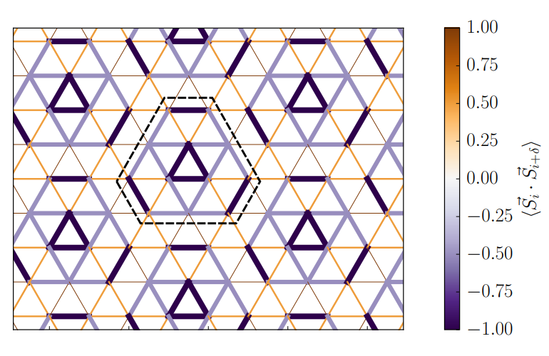
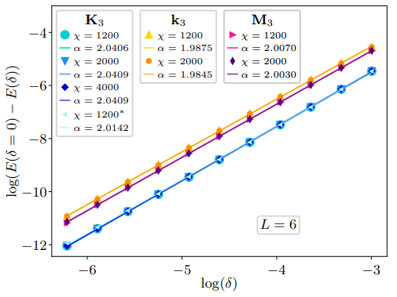

2023年7月
論文紹介TOP < 2023年7月
今月のまとめ
7月：気になった論文一覧（随時更新中）
ピックアップ論文
1. 層間スタッキングによって誘起される二次元ファンデルワールス磁性体中の反スキルミオン
・反スキルミオンは、空間的にねじれたスピン構造を持ち、非自明なトポロジーを示す磁気準粒子である。反スキルミオンは、通常、非対称なジャロシンスキー・守谷相互作用（DMI）が必要であるが、これは非常に稀な対称性を持つ結晶でしか観測されていない。
・二次元ファンデルワールス磁性体は、層間相互作用が弱く、層間スタッキングによって物性を制御できる新しい磁性材料である。特に、CrI3やMnI3などの遷移金属トリハライドは、層間スライドによって非対称なスタッキングパターンを形成し、電気分極を持つことができる。
・第一原理計算により、CrI3やMnI3などの二次元ファンデルワールス磁性体の電気分極層間スタッキングが反スキルミオンを実現する可能性が示された。電気分極層間スタッキングは、DMIを誘起し、その方向や大きさを電場によって制御できる。また、Mnドープによって磁気異方性を減少させることで、反スキルミオンのサイズや安定性を改善できることが分かった。
・原子スピンダイナミクスシミュレーションにより、Cr0.88Mn0.12I3電気分極層間スタッキング中に反スキルミオンが形成されることが予測された。さらに、電場によって電気分極を反転させることで、反スキルミオンのスピンテクスチャーも反転することが示された。これらの結果は、二次元ファンデルワールス磁性体中で反スキルミオンを生成し制御する新しい方法を開拓した。
コメント：スキルミオンの制御は難しいイメージがあるが、層間スタッキングやMnドープという簡単な手法で反スキルミオンを実現している点は面白いと思う。
DATE: 28 Jul 2023
Magnetic Antiskyrmions in Two-Dimensional van der Waals Magnets Engineered by Layer Stacking
Kai Huang et al. (University of Nebraska, USA)
arXiv:2307.15769 (cond-mat.mtrl-sci)


2. 多元素合金の機械的性質予測のための原始的な機械学習ツール
・多元素合金（MPEA）の組成と6つの機械的性質（硬さ、降伏強度、引張強度、伸び、圧縮強度、塑性）を含むデータセットを作成した。
・MPEAの組成を機械学習モデルの入力ベクトルに変換するために、パーサーというツールを開発した。
・線形回帰、K近傍回帰、サポートベクター回帰、ランダムフォレスト回帰などのさまざまな機械学習モデルを適用して、MPEAの機械的性質を予測した。
・Gradioというライブラリを使って、機械学習モデルの予測結果を視覚化し、ユーザーと対話できるインターフェースを作成した。
コメント：マテインフォ系のGUIの優れたソフトが最近色々な特性解析に拡張しているような気がする。
DATE: 15 Aug 2023
A primitive machine learning tool for the mechanical property prediction of multiple principal element alloys
R. Tan et al. (The Australian National University,
Australia)
arXiv:2308.07649v1 (cond-mat)
 
随時更新中
#ChatGPTによる要約と追加コメントを記述